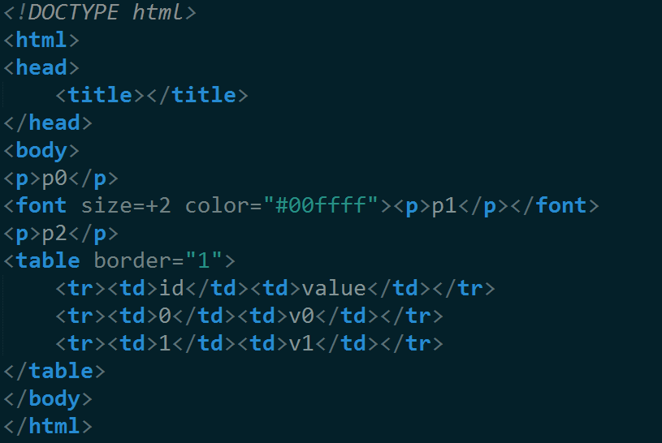

wxHtmlWindow
#include <wx/html/htmlwin.h> Library: wxHTML wxHtmlWindow 是一個html顯示控件 其支持html標準的一個真子集 (不支持 框架 css js 如果需要完整的 html支持 使用 wxWebView) 要使用 wxHtmlWindow 只需要 1 實例化 wxHtmlWindow 2 調用 一下函數 設置要顯示的html //設置html字符串 virtual bool wxHtmlWindow::SetPage ( const wxString & source ) //加載html文件(可以說url 或 wx虛擬文件路徑) virtual bool wxHtmlWindow::LoadPage ( const wxString & location )
事件
void handlerFuncName(wxHtmlCellEvent& event) or void handlerFuncName( wxHtmlLinkEvent& event) EVT_HTML_CELL_CLICKED(id, func): A wxHtmlCell was clicked. EVT_HTML_CELL_HOVER(id, func): The mouse passed over a wxHtmlCell. EVT_HTML_LINK_CLICKED(id, func): A wxHtmlCell which contains an hyperlink was clicked.
example

void acFrame::InitPanelIn()
{
wxPanel* panel = new wxPanel(this);
panels_[DARK_PANEL_INDEX_IN] = panel;
wxBoxSizer* sizer=new wxBoxSizer(wxHORIZONTAL);
panel->SetSizer(sizer);
//創建wxHtmlWindow
wxHtmlWindow*html = new wxHtmlWindow(panel,wxID_ANY);
//加載html
html->LoadPage(_("test.html"));
sizer->Add(html,1,wxEXPAND|wxALL,5);
top_sizer_->Add(panel,1,wxEXPAND|wxALL,10);
}
wxHtmlEasyPrinting 打印
wxHtmlEasyPrinting 用來 打印本地 html 1 實例化 wxHtmlEasyPrinting 2 調用 //打印預覽 html bool PreviewFile (const wxString &htmlfile) //打印 html bool PrintFile (const wxString &htmlfile)
成員函數
//顯示 打印設置 對話框 void PageSetup () //獲取打印設置 wxPrintData * GetPrintData () //獲取 顯示設置 wxPageSetupDialogData * GetPageSetupData () //制定 頁眉 頁腳 void SetHeader (const wxString &header, int pg=wxPAGE_ALL) void SetFooter (const wxString &footer, int pg=wxPAGE_ALL) 宏 @PAGENUM@ 當前頁 @PAGESCNT@ 總頁數 ...
example
wxHtmlEasyPrinting* p = new wxHtmlEasyPrinting(_("name"),this);
p->SetHeader(_("page @PAGENUM@/@PAGESCNT@"));
p->PreviewFile(_("test.html"));